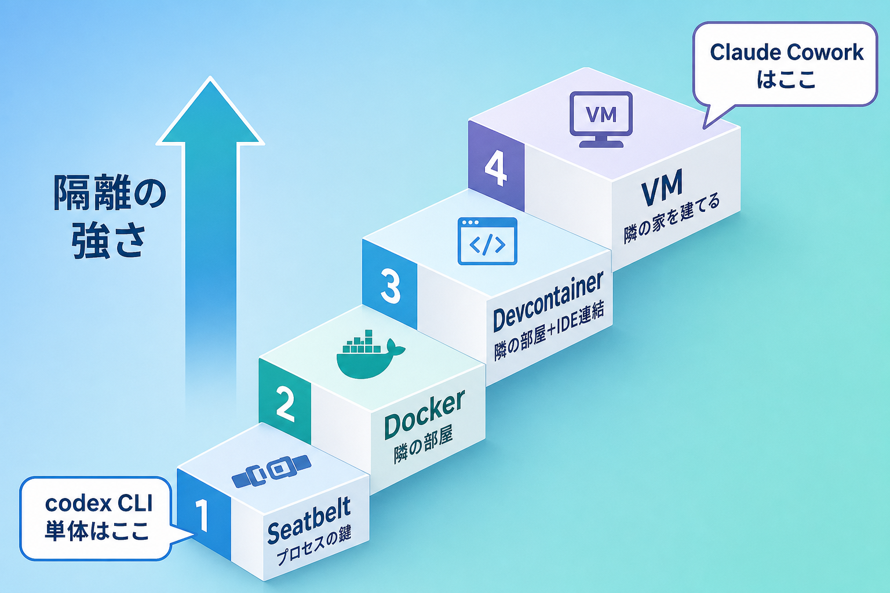
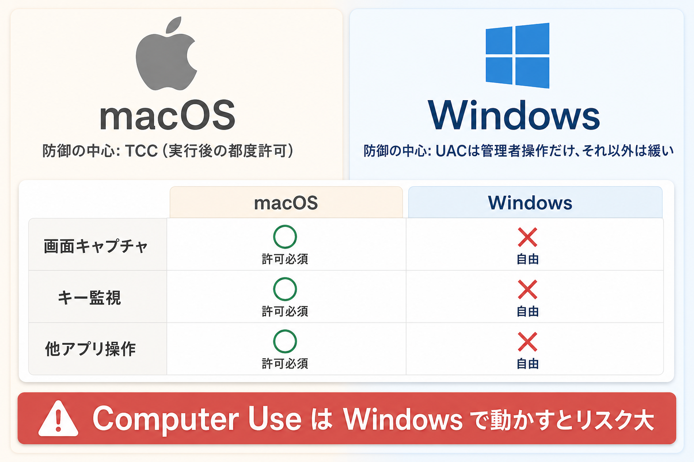

作業部屋を決める
AIが作業してよいフォルダを決めます。家全体ではなく、机の上だけを触らせるイメージです。
このページは、AIエージェント安全パッケージが何を守り、何を守れないのかを、はじめての人向けに説明するための案内です。
AIエージェントは、チャットで答えるだけではなく、あなたのパソコンでファイルを読んだり、コマンドを実行したりします。便利ですが、間違えると危険です。
AIが作業してよいフォルダを決めます。家全体ではなく、机の上だけを触らせるイメージです。
AIが危ない操作をしようとした時、実行前にチェックして止めます。
普通にAIを起動すると見張りを通らない場合があります。必ず安全起動を使います。
CLIとは、黒い画面やターミナルで起動するAIツールのことです。Codex CLI、Claude Code、Gemini CLIなどが対象です。

CLI単体の防御は強すぎる箱ではありません。作業フォルダ、hook、承認、OS制限を重ねて守ります。
どれか1つで全部を守るのではなく、複数の関所を重ねます。専門的には多層防御です。
curl や wget など、外へ送る足場になりやすい操作を止めます。インストールは玄関に鍵を置く作業です。実際に鍵をかけるには、安全起動のコマンドやボタンを使う必要があります。
インストール後、作業フォルダで安全起動します。
インストール後、作業フォルダで安全起動します。
受講者向けには「AIを開く時は、普通の codex ではなく、安全起動を使う」とだけ覚えてもらうのが安全です。
ここを曖昧にすると事故になります。守備範囲は正直に分けます。
| 場面 | 効くか | 理由 |
|---|---|---|
| 安全起動したCodex CLIが危険コマンドを出す | 効く | hook、承認、サンドボックスで止める対象です。 |
| AIが作業フォルダの外へファイルを書こうとする | 効く | workspace制限とOSサンドボックスの対象です。 |
| ブラウザ版ChatGPTに自分で秘密を貼る | 効かない | このパッケージを通らず、ブラウザから直接送信されます。 |
| Computer Use系のAIが画面を直接操作する | 基本対象外 | CLI hookを通らないため、OSの権限設定が中心になります。 |
| Antigravity CLIの手動設定が未完了 | 一部のみ | launcherで効く部分と、利用者が設定画面で合わせる部分が分かれます。 |

MacとWindowsではOS側の守り方が違います。同じ説明だけでは足りないため、手順はOS別に分けます。
Macはアプリ権限の確認が強く、Windowsは学校PCの権限・SmartScreen・PowerShellの癖で詰まりやすいです。だからこのパッケージはOS別の手順とdoctor確認を持っています。
このパッケージは、AIモデルそのものを改造するものではありません。CLIツールがOSに命令を出す手前で、設定・hook・sandbox・policyを挟みます。
configs/：Codex、Claude、Geminiの設定scripts/：安全起動、doctor、guardpolicy/safety-policy.json：止める対象のルールworkspace-template/：受講者用の作業フォルダ設定